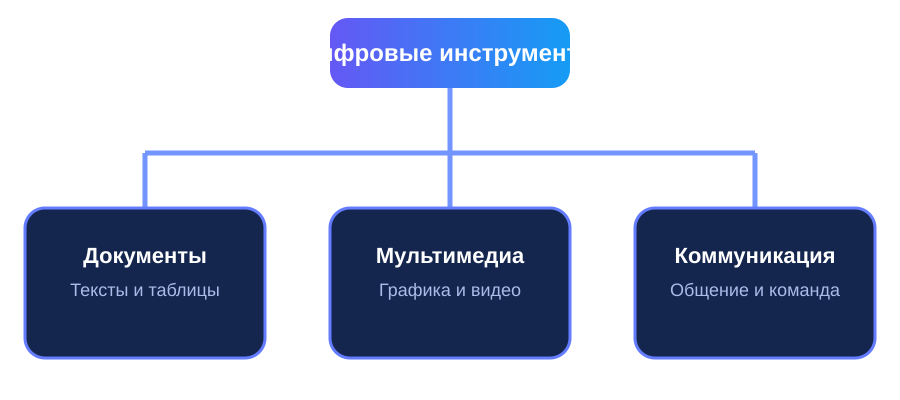

▤
1. Документы и данные
Сервисы для подготовки текстов, расчётов, таблиц, отчётов и презентаций.
Google ДокументыMicrosoft 365Яндекс Документы
Сервисы для подготовки текстов, расчётов, таблиц, отчётов и презентаций.
Google ДокументыMicrosoft 365Яндекс ДокументыИнструменты для обработки изображений, создания макетов, видеороликов и визуальных материалов.
CanvaFigmaClipchampПлатформы для переписки, видеовстреч, обмена файлами и командной деятельности.
Microsoft TeamsЯндекс ТелемостDiscord